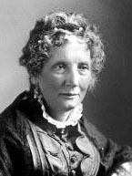

|

|

|
|
|
Writer Harriet Beecher Stowe was born in 1811 in
Lichfield, Connecticut, the seventh of the nine children of
Roxanna Foote and the Reverend Lyman Beecher. A bright
child who listened eagerly to theological discussions,
Harriet attended the Lichfield Academy. Between 1824 and
1827 she attended her sister Catherine's Hartford Female
Seminary where she became first an assistant, then a teacher
(1828-32). She was an avid reader and showed considerable
writing talent from early on, and with the help of Catharine
Beecher she was able to develop it in a systematic way. In
1832 Lyman Beecher became president of Lane Theological
Seminary in Cincinnati, Ohio; Catherine and Harriet moved to
Cincinnati, too, with plans to establish a college, The
Western Female Institute. A true intellectual, Harriet
struggled to define her life constrained by "the constant
habits of self-government which the rigid forms of our
society demands," as she characterized it. She attended the
Semi-Colon Club, a social and literary society, in order to
stimulate her literary efforts. In Cincinnati she met and in
1836 married the Reverend Calvin Stowe, a recently widowed
professor of Biblical studies.
Stowe, who gave birth to seven children, began writing
moral, temperance, and domestic tales for Godey's Lady's
Book in 1839 to supplement her husband's income.
Following the 1849 cholera epidemic which claimed the life
of the Stowes' infant son, the family left Cincinnati first
for Brunswick, Maine, then in 1851 for Andover,
Massachusetts where Calvin was offered the Chair of Sacred
Languages at the Andover Theological Seminary. Stowe
published short pieces, including an outraged response to
the Fugitive Slave Act. At the urging of friends and family,
she resolved to turn her literary talent to combat the evils
of slavery. She planned to write a series of sketches,
published in installments in the National Era. "My
vocation is simply that of a painter--there is no arguing
with pictures." she wrote the editor. She drew from her
personal experience with black servants, and the domestic
nature of her experience sheds light on the blending of
philanthropic and paternalistic attitudes toward
African-American. As a woman she identified with oppressed
black women, but as a middle-class white woman she distanced
herself from them, an attitude not inconsistent with
anti-slavery sentiments in mid-nineteenth century America.
Stowe studied published accounts of slavery and slave
escape narratives, as well as personal accounts of people
who, unlike herself, knew the South. She strove to make her
picture as true to life as possible, while also combining
her descriptive narrative with highly charged assaults on
the pro-slavery clergy and on public indifference. In March
1852, Uncle Tom's Cabin was published to immediate
success. In the following years, Stowe became a regular
contributor of stories and sketches to the religious
antislavery organ, the Independent. She published
A Key to Uncle Tom's Cabin (1853), a documentary
evidence of slavery. Uncle Tom became the most read
book after the Bible and propelled Stowe into antislavery
politics.
In 1853 she sailed for England with her husband and
brother Charles to receive the antislavery petition signed
by half a million women. Mindful of her reputation as a
modest and private woman, Stowe delegated all public
speaking to the men. Both in England and in America, she was
careful to avoid alienating her natural audience and
original target--women. She repeatedly disclaimed public
aspirations; "the nursery and the kitchen were my principal
fields of labor," she wrote. Not having a clear and
consistent stance within antislavery politics, Stowe urged
cooperation between the various factions. She never allied
herself with the abolitionists, whom she considered
extremists. Dred (1856), her second antislavery
novel, reflected the shortcomings of her political thinking:
she could neither embrace evolutionary reform, nor advocate
more radical solutions. She was interested in and wrote on
the reform movements of her time, often in the Beecher
sermonizing tradition.
The success of Uncle Tom's Cabin brought material
comforts to the family, as well as fame to Harriet. When she
met President Abraham Lincoln for the first time, he
reportedly exclaimed, "So this is the little lady who made
this big war." Stowe's nostalgia for simpler times was
consistent with mid-century ambivalence about materialism.
The Minister's Wooing (1859) and Old Town
Folks (1869) reflect the simpler life of her childhood
New England. As money disappeared fast in the Stowe
household, she kept writing throughout the 1860s and 70s,
publishing over twenty books. An intelligent and
well-educated woman, Stowe captured the sensibility of the
native-born middle-class. Harriet Beecher Stowe died on July
1, 1896, in Hartford, Connecticut.
Source: Joan Waugh, ed., Facts on File Encyclopedia of American
History: Civil War and Reconstruction, 1856 to 1869 (New York: Facts on
File, 2003), 338-339.
|